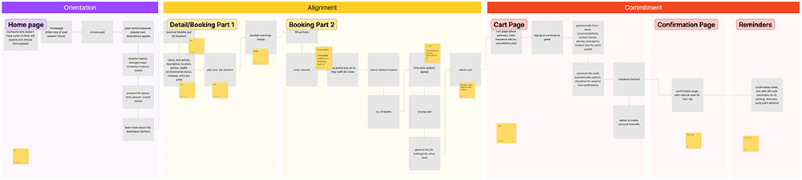
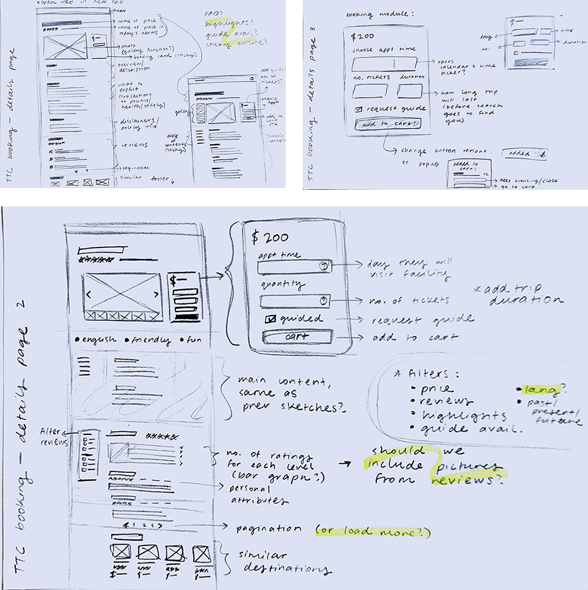
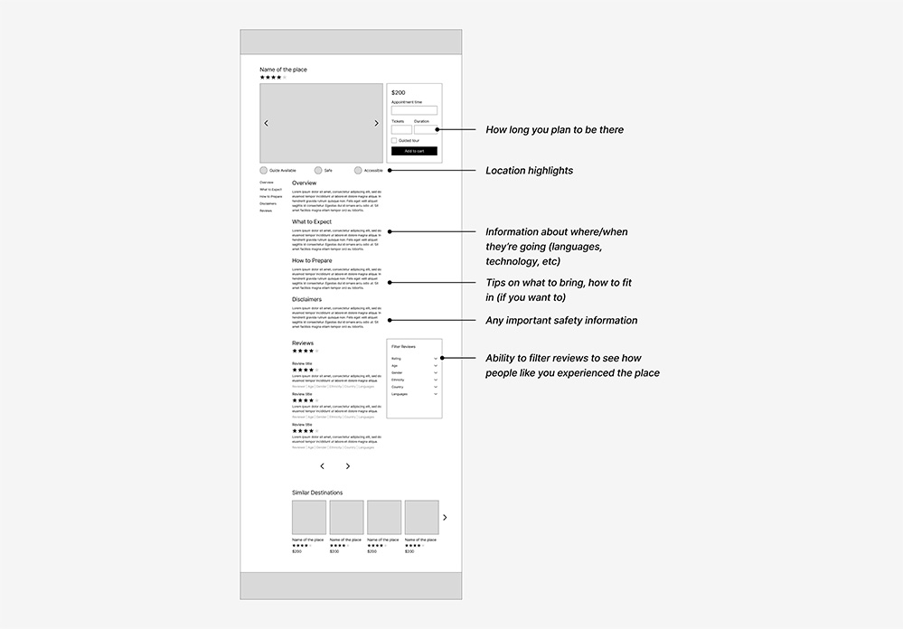

Overview
About This Project
This was a group project for my UI/UX Design class at CSUSB. I conducted user interviews, presented insights, facilitated our user flow workshop, contributed ideas for features, and created lo-fi wireframes.
The Scenario
The Time Travel Collective has invented time travel technology, but they don't have a product. Because the technology is so new, they don't know who their users might be or what they might need. As a class, we were split into teams and tasked with designing elements of the time travel experience based on real user research.
My Contribution
I was part of the application team, which was responsible for designing the online booking experience. My user interviews revealed fears toward the unknown that were associated with social identities and histories of oppression. To help address these concerns, I contributed ideas for features that would support users with information throughout the browsing stage: detailed destination pages and reviews with demographic information.
Research
Understanding the Product
We started our research with a stakeholder interview. An “engineer” at the Time Travel Collective answered our questions so that we could understand how the technology works and what the collective needs.
Technological Capabilities and Constraints
- Users can travel to any place on Earth, at any point in time.
- The time travel technology itself is safe for the human body.
- Users are transported to an alternate timeline and return to their original timeline.
- Users are physically transported and visible in their place and time. They can interact with the world and the world can interact with them.
Business Needs
In our scenario, the Time Travel Collective has only developed safe, functional technology. As a business, they still needed:
- A brand identity.
- An online booking process.
- Hardware design.
Understanding Users
The next step was to discover who our users might be and what they might need for a good booking experience.
But we were going to interview real people, and we couldn't ask questions about experiences they hadn't had. We had to develop an interview strategy that would give us insights into our fictional problem space.
Developing an Interview Strategy
As a team, we generated a pool of possible interview questions and set off to conduct individual pilot interviews. Then, we regrouped as a class to assess the value of our responses and refine our interview approach.
I divided my interview script into three parts with distinct goals. Then, I chose a few high-level questions for each part. The rest of my questions were going to be follow-up questions— guided by my goals, but crafted on the spot and tailored to each interviewee's previous responses.
Part 1 - Introduction
My goal for this part of the interview was to build rapport and get to know the interviewee. I would thank them for their time, introduce the project, and ask them to describe themselves. Knowing a bit about their personality and interests would give me something to work with in the rest of the interview.
Part 2 - Time Travel
My goal for this part was to understand the interviewee's attitudes and motivations for time travel. I would ask them to imagine themselves using time travel, going through a sort of thought experiment. I would also ask them to incorporate their interests with time travel to give them something real to consider and help ground their responses.
Part 3 - Online Booking
Here, my goal was to understand their attitudes, motivations, and pain points when buying tickets online. I would ask about the last time they purchased tickets and probe to learn more about their experience.
Conducting the Interviews
I interviewed three people with my new script and presented a summary of each interview to my team.
“I feel like time travel shouldn't be physically interacted with. It should just be an observation.”
All of my interviewees wanted the ability to spectate while time traveling. Some worried about altering their own timeline, while others felt it was wrong to alter the timelines of others.
“It's the bad I know versus the bad I don't know. What you know can be tolerated.”
When it came to time travel as a physical experience, everyone expressed some level of fear. Many thought that traveling to the past could be a bad or even dangerous experience, based on their knowledge of history and their experiences as women of color. While they were more optimistic about the future, it was still unknowable with the potential to be a bad experience. Wanting to avoid these risks, most of my interviewees imagined they would stay within the timespan of their lives— if they time traveled at all.
“I feel like, when I book something like that, I want to know everything ahead of time to see whether I want to book that or not.”
A major benefit of online booking is it allows users to gather information and comparison shop before they commit to their purchase. My interviewees wanted to know prices, read reviews, and have a clear idea of their trip in order to feel confident in their decision.
Identifying Problems
In our scenario, time travel is a physical experience with no option to spectate. That means our users can enjoy an interactive experience, but there are real risks involved. Based on my interviews, this posed a major problem for users.
- Users have doubts about the safety of the technology.
- Users don't know whether their destination will be safe or enjoyable.
If users are afraid of time travel, they aren't going to use it. When these fears are tied to histories of oppression, there's a risk of excluding marginalized people from our service.
Exploring Opportunities
- How might we help users feel confident in the safety of the technology?
- How might we support users in finding a destination that they will enjoy?
Since we were the application team, all of our ideas had to be situated within the online booking process.
Design
Mapping the User Flow
To get everyone on the same page, I suggested we create a user flow together. As a team, we worked out how users would get from the home page to checkout.
We shared high-level ideas for steps and features that users might need based on our interviews.
Ideation
I thought that giving users information about destinations would help them find and plan a good trip, so I focused on designing a detailed destination page.
I based my sketches on real travel sites and added sections for information that users might find important. These details would give users environmental, social, and political context, and highlight safety information.
I thought that reviews could be another opportunity to communicate safety. In general, they would show that the technology has reliably transported people to their destinations and back. And, by allowing reviewers to include their demographic information, users can get a better idea of what an experience might be like for them in particular.
Lo-Fi Wireframes
Next, I created a digital wireframe to hand off to the UI sub-team, who worked on bringing the design into high fidelity based on guidelines from the branding team.
Reflection
What I Learned
Going into this project, I thought the biggest problem would be designing an interface that lets users select a destination across time and space. It's an interesting problem when geography shifts, names for places change, and time standards aren't guaranteed. But, after conducting interviews, easing user anxieties became my main focus. Their concerns were legitimate, and my goal wasn't to make them accept time travel. I wanted to give them all of the facts so that they could make an informed decision.
Next Steps
With more time, I would have liked to test a prototype with users. With different destinations, contextual information, and reviews, I would want to know if users feel informed enough to put their bodies in a given environment.